操作系统笔记11 文件系统
文件系统接口(用户角度)
文件概念
- **
文件**是逻辑外存单元的最小分配单元。 - 类型
- 数据：数字字符，二进制…
- 程序
- 文件结构
- 无： 一个字节序列
- 简单的记录结构：①行 ②固定长度 ③可变长度
- 复杂结构：①格式化文档 ②对象文件 ③可执行文件
- 谁决定文件结构？
- 操作系统：可执行文件和共享库文件的结构
- 程序
- 文件属性：所有文件的信息都保存在目录结构中。
- 名称：文件符号名称是唯一的、按照人们易读取的形式保存。
- 标识符：标示文件系统内文件的唯一标签，通常为人不可读。
- 类型：被支持不同类型的文件系统所使用。
- 位置：该信息指向设备和设备上文件位置的指针。
- 大小：文件当前大小，也可包括文件允许的最大容量值。
- 保护：决定谁能读、写、执行等的访问控制信息。
- 时间，日期和用户标识：文件创建、上次修改和赏赐访问的相关信息。这些数据用于保护、安全和使用跟踪。
- 文件操作
- 创建，打开，关闭，读，写，在文件内重定位(搜索目录相应条目)，删除，截短(删除内容保留属性，长度设置为0并释放)。
- 打开文件：当一个文件被打开时，除了存储在设备上的信息之外，还会执行几条数据来管理打开的文件
①文件指针：指向上次读取/写入位置的指针，这种指针对于打开文件的每个进程唯一。
②文件打开计数器：文件关闭时，操作系统必须重用其打开文件表条目，否则表内空间会不够用。因为多个进程可能打开同一个文件，所以系统在删除打开文件条目之前，必须等待最后一个进程关闭文件。该计数器跟踪打开和关闭的数量，当该计数为0 时，系统关闭文件，删除该条目。
③文件磁盘位置：绝大多数文件操作都要求系统修改文件数据。该信息保存在内存中以免为每个操作都从磁盘中读取。
④访问权限：每个进程打开文件都需要有一个访问模式（创建、只读、读写、添加等)。该信息保存在进程的打开文件表中以便操作系统能允许或拒绝之后的 I/O 请求。 - 文件类型 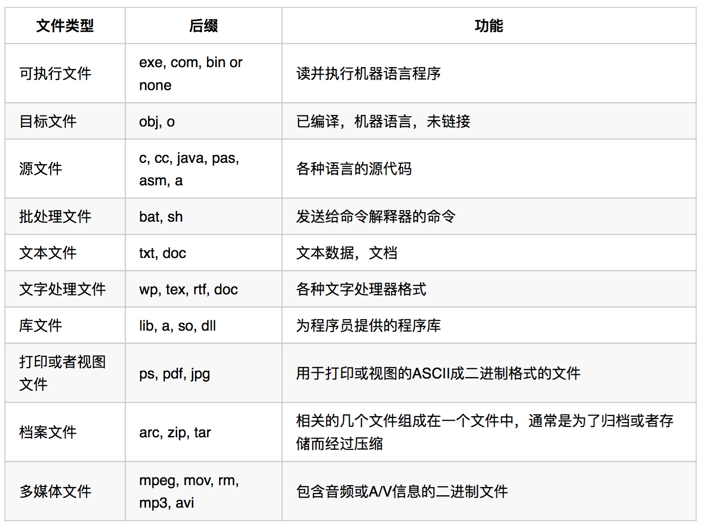
- 文件访问：文件访问
- 顺序访问：从头开始读取所有字节/记录。不能跳转，但当存储设备是磁带时可以倒带或备份。
- 随机访问/直接访问：读/写顺序无限制。字节/记录以任何顺序读取，这种访问对数据库很重要。
目录结构
- 目录操作：
- 搜索文件
- 创建文件
- 删除文件
- 遍历目录
- 重命名文件
- 跟踪文件系统
单层目录结构- 限制：①文件必须具有唯一名称(命名问题) ②(文件过多)分组问题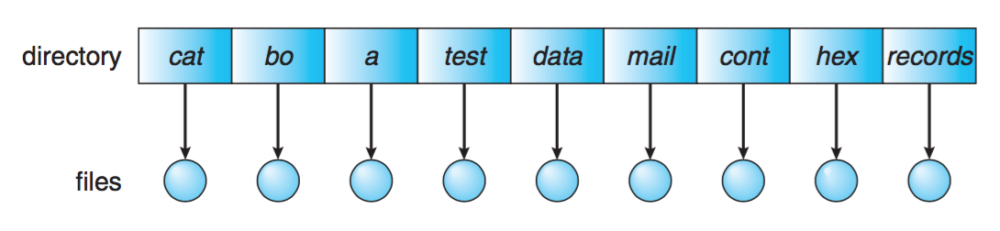
双层目录结构- 为每个用户创建独立目录
- 特点：①文件或目录可以按其路径定位 ②不同的用户可以使用相同文件名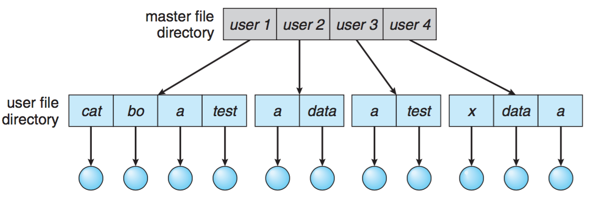
树状目录结构- 分组能力
- 禁止共享文件或目录
- 路径名有两种形式：①绝对路径名 ②相对路径名
- 每个进程都有一个当前目录，在启动时分配给它。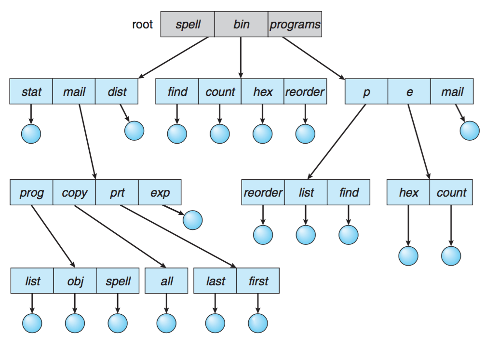
- **
无环图目录**：树状结构目录的扩展 - 允许目录含有共享子目录和文件。同一文件或子目录可出现在两个不同目录中。
- 某些操作系统不支持无环图目录，例如MS-DOS
- UNIX/LINUX和Windows（7+）通过符号链接支持它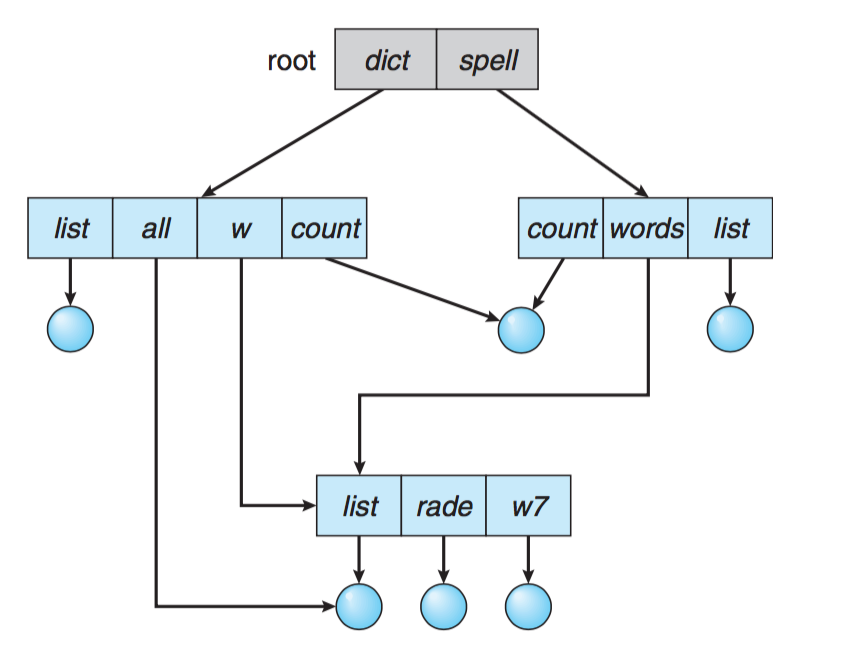
文件系统挂载
- 文件系统在被系统上的进程使用之前必须安装/挂载。
- 目录结构可以建立在多个卷上。这些卷必须安装以使它们在文件系统命名空间可用。(U盘)
- 文件系统的安装位置称为安装点，为一个空目录。
- Windows操作系统在引导过程中安装包含FAT（-12，-16，-32）或NTFS文件系统的所有分区，分别是“C：”，“D：”等。
- 在UNIX / Linux中，系统管理员必须发出命令来在设备中安装文件系统。
mount -t iso9660 / mnt / cdrom / dev / cdrom
文件共享
- 在多用户系统上共享文件是可取的。
- 大多数系统通过其唯一的用户标识或UID来识别用户。除了UID，一些系统还实现了组功能
- 每个组都分配一个唯一的组标识或GID。每个用户可以在一个或多个组中
- 当文件或目录最初创建时，它与用户的UID和GID相关联。拥有文件的用户是该文件的所有者。
文件保护
- 文件所有者应该能够控制可以完成什么以及由谁来完成
- 访问类型：读取（R），写入（W），执行（X），添加，删除，列表
- 访问控制列表（ACL）指定用户名和每个用户允许的访问类型。
- 它用于执行细粒度的文件和目录保护。 ACL的主要问题是它们的长度。
- 因此，最常见的方法是将UNIX样式保护与ACL结合使用。
- 例如，Windows NT或更高版本以及Solaris 2.6或更高版本使用此组合方法。
文件系统实现
文件系统结构
- 文件
- 逻辑存储单元
- 相关信息的集合
- **文件控制块(FCB)**：包含文件的所有信息。在UNIX中，FCB通常称为inode
- 文件系统：提供对磁盘的高效且便捷的访问，用以轻松地存储、定位和提取数据。
- 在二级存储器中，采用分层结构实现文件系统能够最大限度地减少重复的代码。 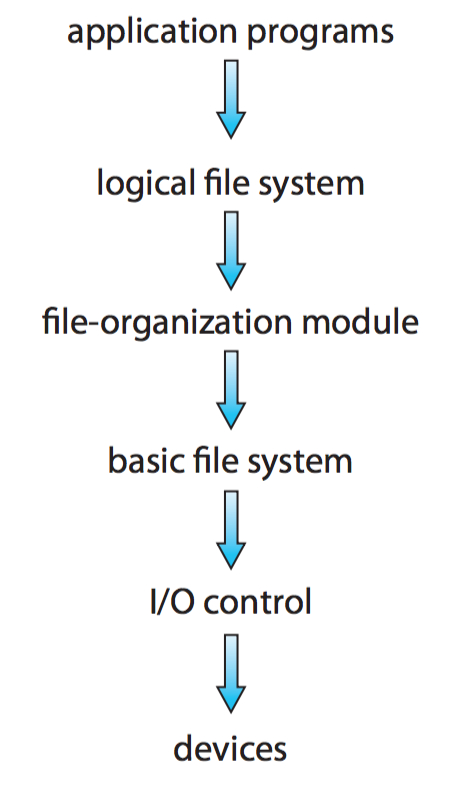
- 一个典型的文件控制块FCB： 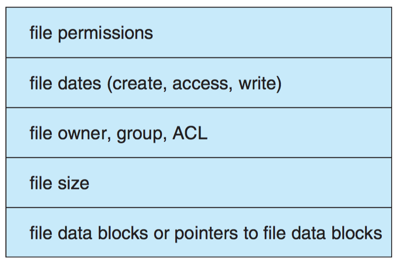
虚拟文件系统(VFS)
- 问题：
- 操作系统如何把多个文件系统整合成一个目录？
- 用户如何在访问文件系统空间时，可以无缝地在文件系统之间移动？
- 虚拟文件系统(VFS)：
- 大多数操作系统包括UNIX使用面向对象的技术来简化，组织和模块化实现过程。
- 一个通用的文件系统接口与文件系统实现分离，文件系统接口包含“打开”，“关闭”，“读取”，“写入”和“查找”等系统调用。 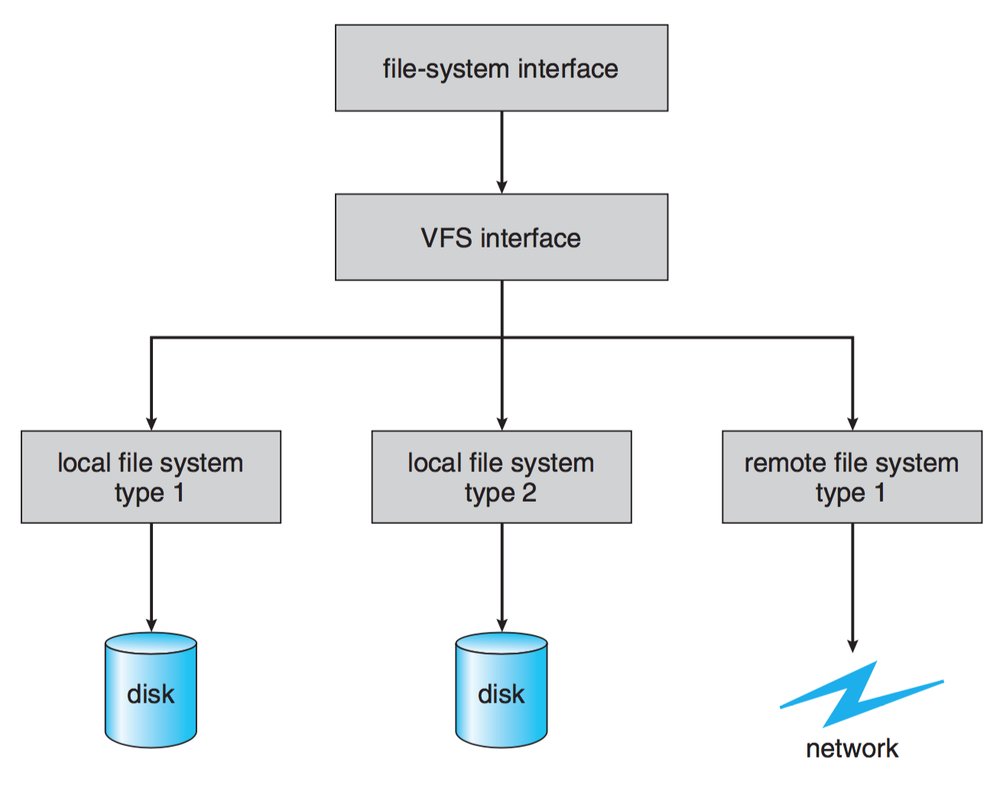
- **
VFS接口**有两个重要功能： - VFS层通过定义一个清晰的VFS接口，以将文件系统的通用操作和具体实现分开。
- VFS提供了在网络上唯一标识一个文件的机制。VFS基于名为vnode的文件表示结构，该结构包含一个数值标识符以表示位于整个网络范围的唯一文件。
目录实现
- 一些操作系统（包括UNIX）将目录完全视为文件
- 它为每个文件或其子目录保存两条信息：文件/子目录名称和指向文件/子目录的FCB的指针（它们通常被组织成一个C“struct dirent”）
- 一个目录可能包含很多文件或子目录，如何组织这些“dirent”？(Unix的一个结构体)
- 线性列表：使用存储文件名和数据快指针的线性列表。
- √ 实现简单
- × 搜索耗时
- 哈希表：线性列表存储结构 + 哈希数据结构
- √ 减少目录搜索时间，插入和删除也很简单。
- × 其通常固定的大小和哈希函数对大小的依赖性。增长困难。
- 大多数操作系统使用“线性列表”来组织目录。
分配方法
- 如何为文件分配空间以便利用磁盘空间并快速访问文件？
- 三种主要分配方法
- 连续分配
- 链接分配
- 索引分配
连续分配
- 要求每个文件在磁盘上占用一组连续块。
- 优缺点：
- √ 简单：只有起始位置（块号）和长度（块数）保存在FCB中
- √ 支持随机访问
- √ 对缓存友好
- × 产生外部碎片：动态存储分配问题
- × 难以扩展文件 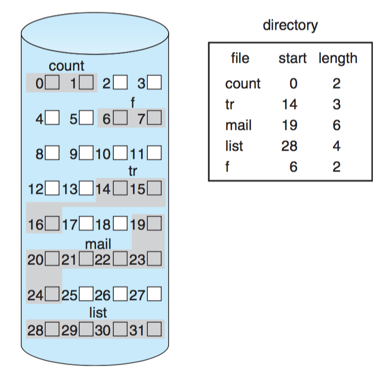
链接分配
- 每个文件都是磁盘块的链接列表。
- FCB包含文件第一块的指针和最后一块的指针。
- 每个块包含一个指向下一个块的指针。
- 这些指针对用户不可见，因此，如果每个块是512字节,磁盘地址（指针）为4个字节，则用户看到508个字节的块。
- 优缺点：
- √ 简单：只需要起始地址
- √ 不浪费空间
- √ 指针需要额外的空间
- √ 没有随机存取，(用单项链表)只能顺序访问
- × 可靠性：分散在整个磁盘上的指针
- 指针的开销可以通过将几个块收集到一个称为群集的较大块中来降低
- 为了解决简单链接分配的问题，每个分区开始处的一段磁盘被放置在一旁，以包含一个包含文件系统所有指针的表。
- 文件分配表(FAT)：一个简单但有效的磁盘空间分配方法，用于MS-DOS和OS/2。
- 每一个卷的开始部分用于存储该FAT。
- 每块都在该表中有一项。
- 该表可以通过块号码来索引。 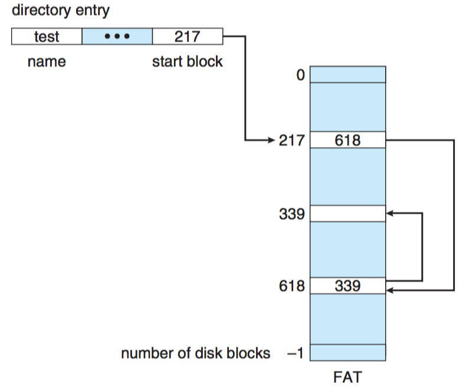
索引分配
- 将所有指向文件磁盘块的指针合并到一个位置：索引块。索引块包含一系列磁盘块地址。
- 解决了连续分配的外部碎片和大小声明问题。 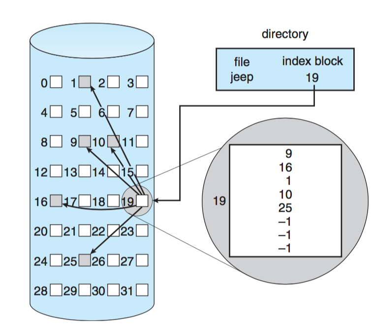
- 优缺点
- √ 支持直接/随机访问
- √ 没有外部碎片(但有索引块的开销)。
- × 需要索引表。
- 索引块的大小：
- 链接方案
- 多级索引
- (以上两种)组合方案 (这是大多数UNIX文件系统使用的方案) 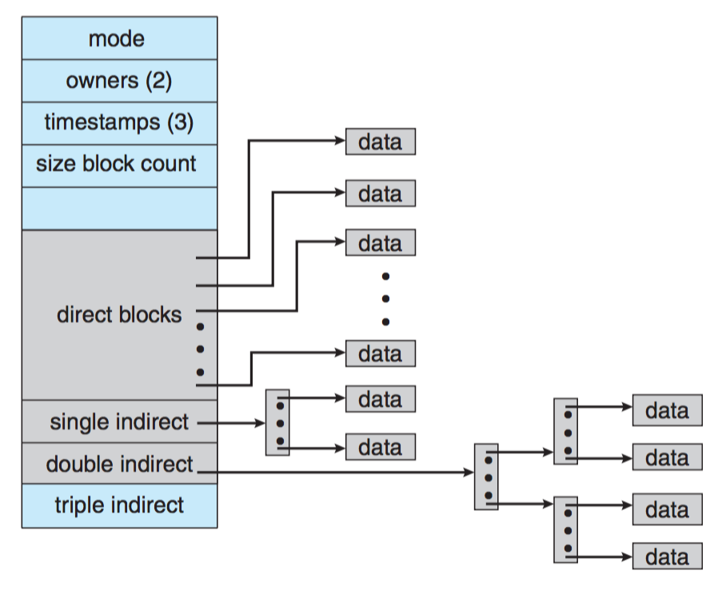
All articles in this blog are licensed under CC BY-NC-SA 4.0 unless stating additionally.